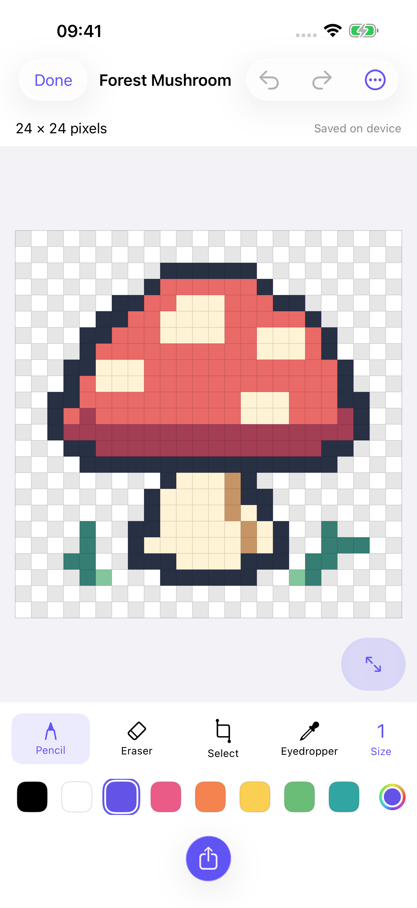
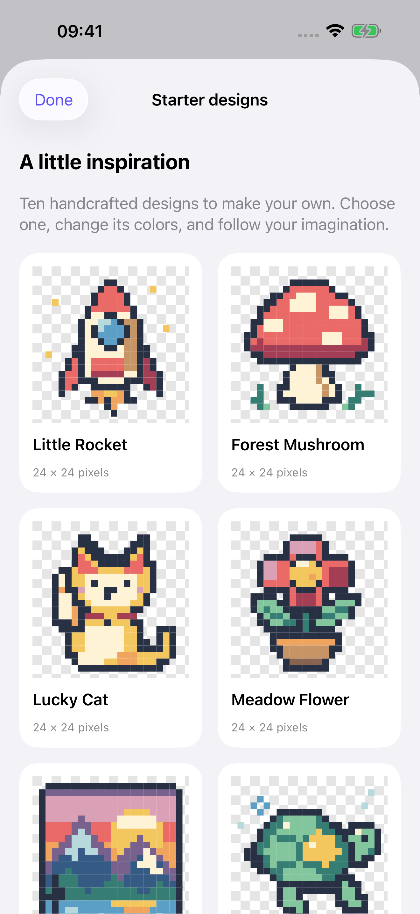
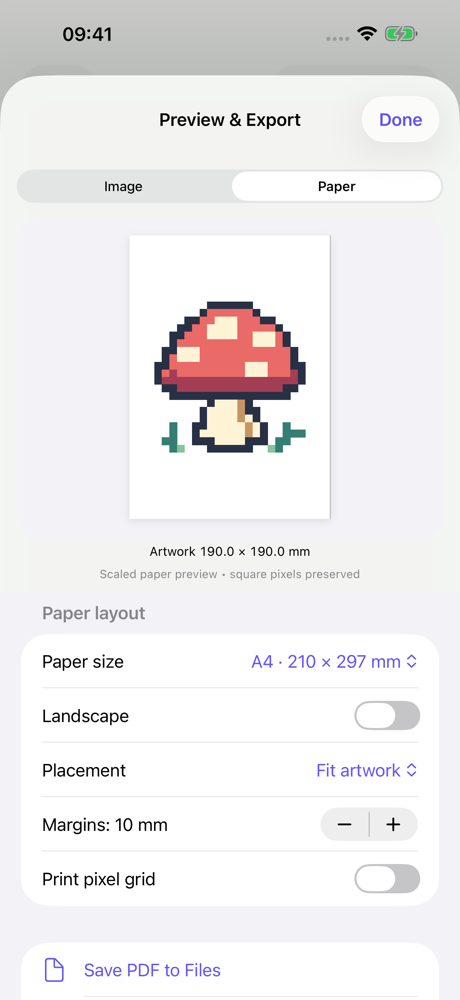

For iPhone & iPad In beta
A little grid.
Big possibilities.
Turn a small idea into something only you could make. Draw, play with photos, and give your pixels a place on paper.
No TelaPixel account. Your projects stay on your device.
English, Italian, French and Spanish.

One pixel at a time.
Paint, erase, select and rotate. Zoom into the details, then step back and see what you made.
A new look for your photos.
Explore palettes and pixel detail with a live preview. Keep the original and revisit your choices.
From screen to sheet.
See the size, margins and layout before exporting. Save a crisp PNG or prepare a PDF for printing.

A starting point, never a limit
Ten little ideas.
Endless ways to make them yours.
A rocket, a mushroom, a lucky cat. Start with an editable design and follow your curiosity. Every sample becomes your own copy, so the original is always there for next time.
- Make precise changes with Pixel Inspector
- Try a different color, then Undo or Redo
- Save your artwork and pick up where you left off
Made to leave the screen
See it before
you print it.
Choose a familiar paper size, set your margins, and see exactly how the artwork fits. Keep it whole, fill the page, or choose a physical size.
- A-series, US and photo paper sizes
- PNG with transparency or a white background
- PDF export and the native AirPrint preview
Your printer determines the final paper and printable margins.

See it in action
Small moves.
Something new.
Watch a real TelaPixel session: open a starter, explore the canvas, and preview the result.
24 seconds · Actual app recording · No narration
Find your way aroundA little creative help
Make room
for imagination.
On supported devices, AI Aid opens Apple's Image Playground. Create an image there, then bring it back as editable pixels.
Apple Intelligence and Image Playground must be available on your device. Apple controls generation and may use its cloud. Drawing and ordinary photo conversion work locally without Apple Intelligence.
How your images are handled →